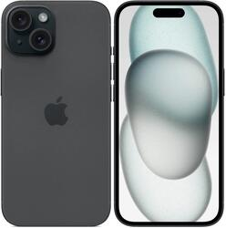
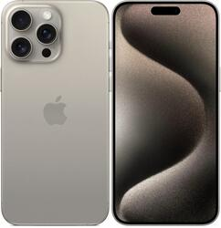
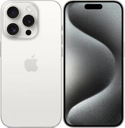
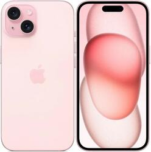

iPhone 15, Plus, 15 Pro и 15 Pro Max (2023)
В 2023 году компания Apple продемонстрировали новую линейку своих смартфонов, состоящую из четырёх моделей: базовый iPhone 15, с увеличенным экраном iPhone 15 Plus, iPhone 15 Pro и iPhone 15 Pro Max для профессионалов.
-
Базовые модели получили чип A16 Bionic, который также установлен в iPhone 14 Pro и Pro Max. Айфон 15 обладает экраном с диагональю 6,1 дюйм, а 15 Plus с диагональю 6.7 дюйма.
-
Базовые модели были представлены в нескольких цветах: голубой, розовый, жёлтый, зелёный и чёрный. Они имеют алюминиевые рамки и крышку из матового стекла.
-
Корпус Pro-линейки впервые создан из титана, что делает их самыми лёгкими Pro-версиями айфонов. Они доступны в новых цветах: "Титановый", "Синий титановый", "Белый титановый", "Чёрный титановый".
-
В базовых моделях впервые появился Dinamic Island вместо «чёлки».
-
Основная камера базовых моделей теперь снимает в сверхвысоком разрешении 48 Мп.
-
В моделях Pro используется 5-кратный телеобъектив. Также, теперь в Pro-версиях можно выбрать объектив основной камеры по умолчанию — 24 мм, 28 мм или 35 мм.
-
В Pro-моделях основная и фронтальная камера TrueDepth использует новейшую технологию Smart HDR , которая улучшает ночной режим и портретную съёмку. Портреты могут быть Live-фотографиями.
-
Камера Pro-моделей поддерживает функцию пространственной видеосъёмки, снимая 3D-видео с помощью усовершенствованной сверхширокоугольной и основной камеры.
-
Во всех моделях вместо порта Lightning впервые был установлен порт USB-C. В базовых версиях установлен USB 2.0, а в Pro-версиях USB 3.0, который обеспечивает скорость передачи данных до 10 Гбит/с и мощность зарядки до 20 Вт.
-
Pro-модели работают на новом 6-ядерном процессоре A17 Pro, который создан с использованием 3-нм техпроцесса и в котором впервые используется аппаратно-ускоренная трассировка лучей.
-
Вместо рычажка переключения беззвучного режима в Pro-линейке появилась новая кнопка «Действие», благодаря которой вы можете установить то действие, которое вам нужно: от быстрого запуска камеры до включения фонарика.
-
Базовый айфон обеспечивает до 20 часов воспроизведения видео без подзарядки, Plus-версия до 26 часов, Pro до 23 часов, Pro Max до 29 часов.




iPhone 16 и iPhone 16 Plus(2024)
Сентябрь 2024 года принёс нам самые крупные изменения в дизайне базовых iPhone с момента выхода iPhone 12. В этом поколении iPhone 16 и iPhone 16 Plus получили новое расположение камер, кнопку «Действия» вместо рычажка беззвучного режима и новую сенсорную клавишу управления камерой.
-
Базовые модели работают на базе чипа A15 Bionic и отличаются только размером экрана. Айфон 14 получил экран с диагональю 6,1 дюйм, а 14 Plus имеет увеличенный дисплей с диагональю 6.7 дюйма.
-
Базовые модели выпускаются в нескольких цветах: «Небесно-голубой», фиолетовый, «Тёмная ночь», «Сияющая звезда», Красный PRODUCT(RED) и жёлтый.
-
iPhone 14 Pro и Pro Max работают на новом процессоре Apple A16 Bionic, который стал ещё более производительный и энергоэффективный.
-
Одним из главных изменений стало появление «Динамического острова», который появился вместо привычной «чёлки». Он способен показывать воспроизводимую музыку, спортивные результаты, телефонные звонки и многое другое, не отвлекая вас от того, чем вы занимаетесь.
-
Был добавлен режим Always-On и технология ProMotion, которая интеллектуально увеличивает или уменьшает частоту обновления от 1 до 120 Гц, благодаря чему всегда будет виден ваш персонализированный экран блокировки.
-
Основная камера Pro-версий получила усовершенствованный сенсор, который максимально использует 48 мегапикселей, адаптируясь к тому, что вы снимаете. Также, в систему камер был добавлен 2-х кратный телеобъектив с оптическим зумом, что даёт вам больше возможностей для фото и максимальное качество при кадрировании и приближении фото.
-
Кинематографический режим теперь позволяет снимать видео в формате 4K HDR 24 кадра в секунду, благодаря чему вы можете снимать по всем стандартам кино. Также, в Pro-моделях была улучшена стабилизация видео, благодаря чему, если вы снимаете с внедорожника или бежите рядом с объектом съемки, то ваши видео будут плавными и чёткими даже без стабилизатора.
-
Во всей линейке iPhone 14 была представлена революционная функция безопасности, которая позволяет обнаруживать серьезные автомобильные аварии и автоматически вызывать службы экстренной помощи. А с функцией Emergency вы можете напрямую соединиться с спутником, что даёт вам возможность обмениваться сообщениями со службами экстренной помощи, когда вы находитесь вне зоны действия сотовой связи или Wi-Fi.
-
Pro-линейка доступна в нескольких цветах: «Глубокий фиолетовый», «Золотой», серебристый и «Космический чёрный».